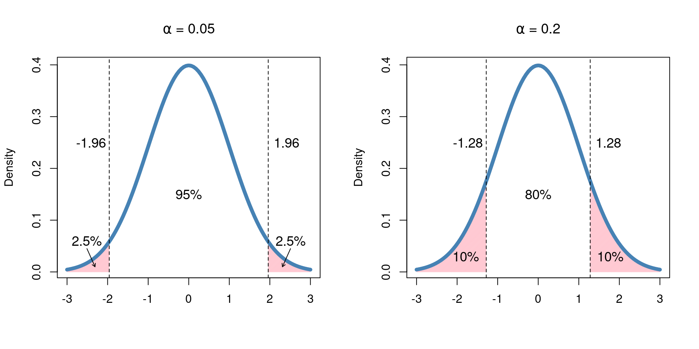

5 Probability Distributions
- Understand the definition of a probability distribution
- Binomial distribution
- Normal distribution
- t distribution
In the previous chapter, we introduced the idea of a random processes, situations with outcomes that we could not determine perfectly in advance. The idea of a random process can apply to most everything in our lives, from the exact amount of time it takes to go from home to class, to determining the winner of a football game. Further, recall that a random process is defined by the collection of possible events and their associated probabilities, [framed in terms of long run frequencies (discuss?)]. In the coin flipping example, where the coin was flipped three times, the collection of possible events was
\[\mathcal{S} = \{HHH, HHT, HTH, THH, TTH, THT, HTT, TTT\},\]
and the associated probabilities for the number of heads were:
## Why does this need cbind?
knitr::kable(cbind.data.frame('# Heads' = 0:3, 'Probability' = c('1/8', '3/8', '3/8', '1/8')),
align = 'c')| # Heads | Probability |
|---|---|
| 0 | 1/8 |
| 1 | 3/8 |
| 2 | 3/8 |
| 3 | 1/8 |
After tabulating all of the possible events, we were able to determine probabilities by tabulating the number of ways each event could occur and dividing by the total number of possibilities (in this case, eight). Of course, this can quickly become cumbersome in general: if three flips resulted in eight possible events, and four flips would result in sixteen, imagine trying to determine all of the possible outcomes of flipping a coin fifty times! Clearly, we need a more efficient way to do this.
[I wrote this when it was two. Not sure if we should keep or not, or reword] Further, suppose we were asked to anticipate the number of heads that would occur after three flips. The table above would lead us to conclude that our best guess would be two or three, as it has twice the probability of either of the other outcomes. In other words, the distribution of outcomes is not completely random: there appear to be some structure in the ways these outcomes unfold. This, along with the need for a more precise way of determining possible outcomes and probabilities, leads us to the topic of the current chapter.
5.1 Introduction to Probability Distributions
Put simply, a probability distribution is a function that takes a possible event as input, and gives us the resulting probability as output.
-In the last chapter, we discussed random processes, events, and probability. We noted that probability is framed in terms of long-run frequencies, or the fraction of time an event occurs if a random processes is repeated over and over. One example we looked at was flipping a coin three times and we were able to determine probabilities for specific events by tabulating the number of ways the event could occur and dividing by the number of possible outcomes of flipping the coin three times. This is a feasible approach when there are not very many possible outcomes, but otherwise can be quite cumbersome. Imagine trying to tabulate all the possible outcomes of flipping a coin 50 times! Yeah, we don't want to imagine that either. This is where the genius of probability distributions comes to our rescue. A **probability distribution** is a function that describes the probability of all possible outcomes for an experiment. The input to the function is the outcome of interest, and the output is the probability of observing that outcome. Probability distributions typically have one or two **parameters**, which describe the distribution. In the coin flipping example, the parameter would be the number of flips.
-Before we get to some of the most commonly used probability distributions and the pre-defined functions, we will illustrate the concept by deriving a probability distribution for our toy example. Before we get to some of the most commonly used distributions, let’s illustrate the concept by formally deriving a probability distribution for our example above. Suppose the experiment consists of flipping a coin three times and recording the number of heads. We will let \(X\) denote the number of heads that appear. We know that the possible values \(X\) can take on are \(\{0, 1, 2, 3\}\), since we can’t see more heads than we have flips, and we can’t have less than zero. As we saw in the previous chapter, there are eight possible outcomes and the sample space for this experiment is
\[\mathcal{S} = \{HHH, HHT, HTH, THH, TTH, THT, HTT, TTT\}.\]
For each of these possible outcomes, we can count the number of heads - \(\{3, 2, 2, 2, 1, 1, 1, 0\}\). To find the probability distribution, we calculate the probability that \(X\) takes on each possible value
library(knitr)
tmpTab <- cbind.data.frame(x = 0:3, 'P(X=x)' = c('1/8', '3/8', '3/8', '1/8'))
kable(tmpTab, align = 'c')| x | P(X=x) |
|---|---|
| 0 | 1/8 |
| 1 | 3/8 |
| 2 | 3/8 |
| 3 | 1/8 |
Since there is one possible event where 0 heads were obtained out of the eight possible events, \(P(X = 0) = 1/8\). Similarly, there are three possible events where 1 head was obtained, so \(P(X = 1) = 3/8\). If we were to plot this probability distribution, it would look like this
x <- 0:3
y <- dbinom(x, 3, 0.5)
barplot(y, names.arg = x, xlab = 'Number of Heads Observed on Three Flips', ylab = 'Probability')
We can also think about these probabilities from a simulation perspective. In this case, we are repeating the experiment of flipping the coin 3 times over and over. So to examine these probabilities from a simulation, we must simulate flipping three coins repeatedly, each time recording the total number of heads observed out of the three flips. If we do enough simulations, we should see the proportion of times each number of heads occurs follows the probability distribution we just calculated.
flipCoin3 <- function() {
dat <- rbinom(3, 1, 0.5)
sum(dat)
}
nSims <- 1000
simRes <- replicate(nSims, flipCoin3())
prop.table(table(simRes))## simRes
## 0 1 2 3
## 0.129 0.364 0.366 0.141The last thing we need to know about probability distributions is that there are two types, discrete and continuous. This is a little different than the types of data discussed in Chapter 2 (categorical or continuous). Discrete distributions calculate probabilities for specific numeric values (most often counts). The coin flipping example we just looked at was a discrete distribution, because there were four distinct possibilities of the number of heads we could observe. On the other hand, Continuous distributions, describe probabilities over a continuum with a smooth curve. For continuous distributions, probabilities are described by the area under the curve.
5.2 Binomial Distribution
The first distribution we will cover is the binomial distribution. The binomial distribution is a discrete distribution which describes the number of successes in a fixed number of independent trials with two outcomes. Often, the outcomes are referred to as success and failure, although this can be a little confusing in biomedical trials where a “success” might be an adverse reaction to a new drug or something even worse. To avoid this confusion, we will instead consider the outcome as either an event or a non-event. There are three assumptions of the binomial distribution:
- There is fixed number of trials, \(n\), each of which has two possible outcomes
- Each trial is independent of the others
- Each trial has the same probability of an event occurring
If \(X\) describes an event with a binomial distribution, we write \(X \sim Bin(n, p)\). \(n\) and \(p\) are the two parameters of the binomial distribution, where \(n\) is the number of trials and \(p\) is the probability of the event occurring. The probability distribution function is described by the following formula:
\[P(X = x) = \binom{n}{x} p^x (1-p)^{n-x}\] and the possible values of \(x\) are 0, 1, …, \(n\).
The coin flipping example was an example of the binomial distribution, where \(n = 3\) and \(p = 0.5\).